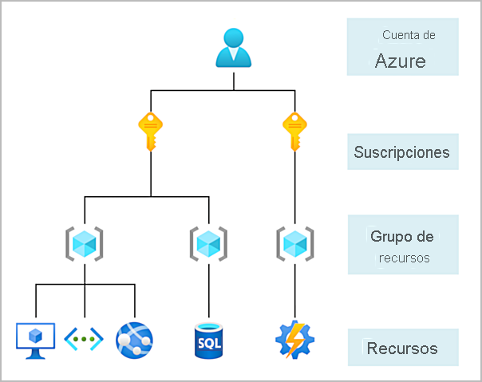
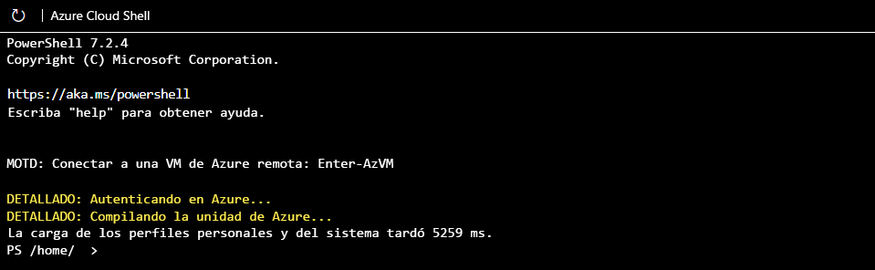
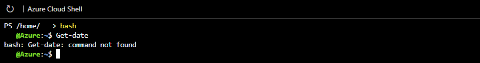
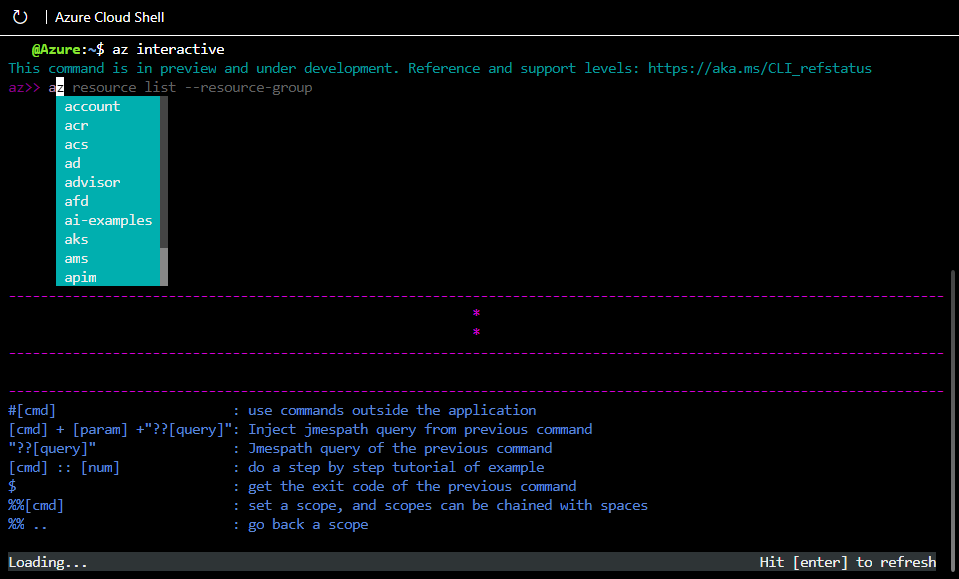
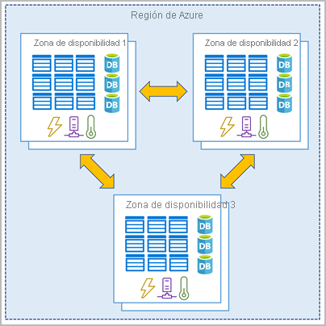
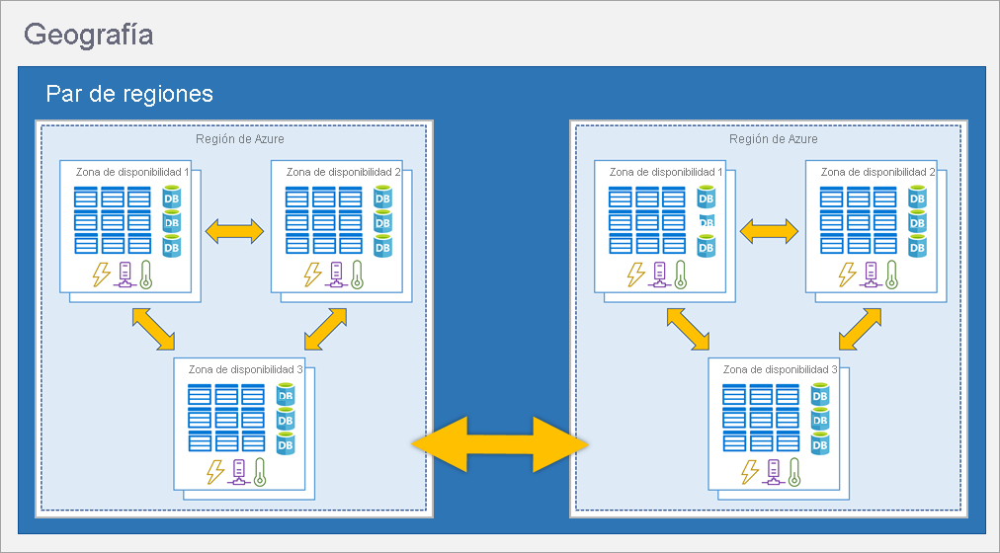
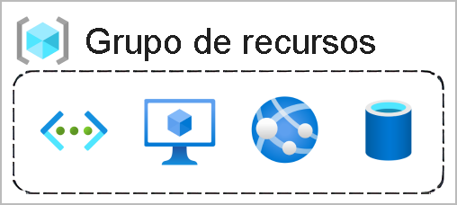
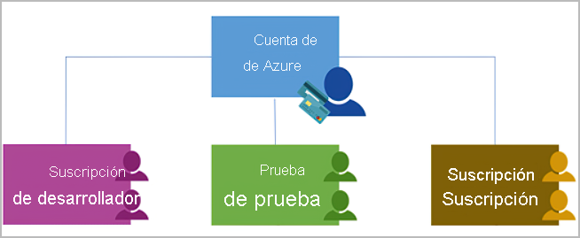
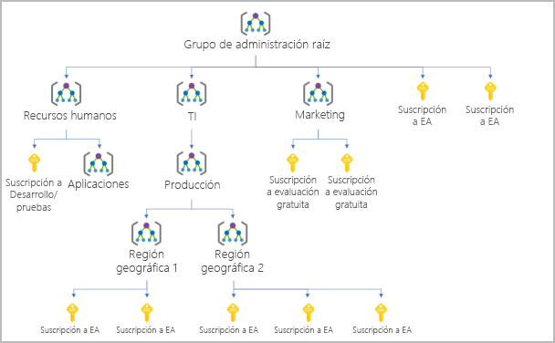
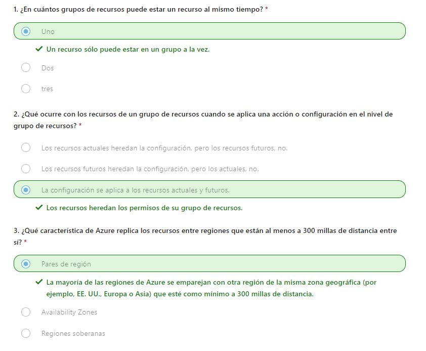

En este módulo, se presentarán los principales componentes arquitectónicos de Azure. Obtendrás información sobre la organización física de Azure: centros de datos, zonas de disponibilidad y regiones; y también sobre la estructura organizativa de Azure: recursos y grupos de recursos, suscripciones y grupos de administración.
Azure es un conjunto de servicios en la nube en expansión constante que le ayudan a cumplir los desafíos empresariales actuales y futuros. Azure le ofrece la libertad de compilar, administrar e implementar aplicaciones en una red global masiva mediante sus herramientas y plataformas favoritas.
Innovación ilimitada. Cree aplicaciones inteligentes y soluciones con tecnología, herramientas y servicios avanzados para llevar su negocio al siguiente nivel. Unifique sin problemas su tecnología para simplificar la administración de plataformas y ofrecer innovaciones de forma eficaz y segura en una nube de confianza.
Azure proporciona más de 100 servicios que permiten hacer todo tipo de cosas: desde ejecutar las aplicaciones existentes en máquinas virtuales hasta explorar nuevos paradigmas de software, como bots inteligentes y realidad mixta. Muchos equipos comienzan a explorar la nube mediante la migración de sus aplicaciones existentes a máquinas virtuales (VM) que se ejecutan en Azure. Aunque este es un buen comienzo, la nube es mucho más que un lugar diferente donde ejecutar las máquinas virtuales. Por ejemplo, Azure proporciona servicios de inteligencia artificial (IA) y aprendizaje automático (ML) que pueden comunicarse de forma natural con los usuarios mediante la vista, el oído y la voz. También facilita soluciones de almacenamiento que crecen dinámicamente para dar cabida a grandes cantidades de datos. Los servicios de Azure permiten soluciones que no son factibles sin la potencia de la nube.
Para crear y usar los servicios de Azure, necesita una suscripción de Azure. Al completar los módulos de Microsoft Learn, la mayoría de las veces se crea una suscripción temporal de forma automática, que se ejecuta en un entorno denominado espacio aislado de Microsoft Learn. Cuando trabajas con tus propias aplicaciones y necesidades comerciales, tienes que registrar una cuenta de Azure y se te creará automáticamente una suscripción para ti. Después de crear una cuenta de Azure, puedes crear suscripciones adicionales. Por ejemplo, es posible que la empresa use una única cuenta de Azure para el negocio y suscripciones independientes para los departamentos de desarrollo, marketing y ventas. Una vez que has creado una suscripción de Azure, puedes empezar a crear recursos de Azure dentro de cada suscripción.
Si no estás familiarizado con Azure, puedes registrarse para obtener una cuenta gratuita en el sitio web de Azure y, de este modo, empezar a explorar sin coste alguno. Cuando estés listo, puedes optar por actualizar la cuenta gratuita. También puedes crear una suscripción que te permita comenzar a pagar por los servicios de Azure que necesitas y a los que no puedes acceder con una cuenta gratuita.
Para comprar el acceso a Azure directamente desde Microsoft, regístrate en el sitio web de Azure o hágalo a través de un representante de Microsoft. También puedes comprar el acceso a Azure a través de un partner de Microsoft. Los partners del programa Proveedor de soluciones en la nube ofrecen una amplia gama de soluciones en la nube administradas y completas para Azure.
videoLa cuenta gratuita de Azure ofrece de forma óptima un comienzo y exploración a los nuevos usuarios. Para registrarse, necesita un número de teléfono, una tarjeta de crédito y una cuenta de Microsoft o de GitHub. La información de la tarjeta de crédito solo se usa para la verificación de identidad. No se te cobrará por ningún servicio hasta que actualice a una suscripción de pago.
La cuenta de estudiante gratuita de Azure es una oferta para estudiantes que ofrece 100 USD de crédito y herramientas de desarrollo gratuitas. Además, puedes registrarse sin tarjeta de crédito.
En muchos de los ejercicios de Learn se usa una tecnología denominada espacio aislado, que crea una suscripción temporal que se agrega a la cuenta de Azure. Esta suscripción temporal le permite crear recursos de Azure para la duración de un módulo de Learn. Learn limpia de forma automática los recursos temporales una vez que hayas completado el módulo. Cuando completas un módulo de Learn, puedes usar la suscripción personal para finalizar los ejercicios que incluye. Pero el espacio aislado es el método preferido, ya que permite crear y probar recursos de Azure sin costo alguno.
En este ejercicio explorarás el espacio aislado de Learn. Puedes interactuar con el espacio aislado de Learn de tres maneras diferentes. Durante los ejercicios, se te proporcionarán instrucciones para al menos uno de los métodos siguientes. Para empezar, activa el espacio aislado de Learn. Después, investigarás cada uno de los métodos para trabajar en el espacio aislado de Learn.
Si todavía no lo has hecho, usa el botón Activar espacio aislado anterior para activar el espacio aislado de Learn. Si recibes un aviso que indica que Microsoft Learn necesita tu permiso para crear un recurso de Azure, usa el botón Revisar permiso para revisar y aceptar los permisos. Una vez que apruebes los permisos, el espacio aislado puede tardar unos minutos en activarse.
Una vez que se inicie el espacio aislado, la mitad de la pantalla estará en modo de interfaz de línea de comandos (CLI) de PowerShell. Si estás familiarizado con PowerShell, puedes administrar el entorno de Azure mediante comandos de PowerShell.

Sugerencia
Puedes saber que estás en modo de PowerShell por las letras "PS" que aparecen delante del directorio
en la línea de comandos.
Usa el comando Get-date de PowerShell para obtener la fecha y hora actuales.
Get-date
La mayoría de los comandos específicos de Azure comenzarán con las letras az. El comando Get-date que acaba de ejecutar es específico de PowerShell. Ahora se probará un comando de Azure para comprobar qué versión de la CLI usa en este momento.
az version
Si estás más familiarizado con BASH, puedes usar el comando BASH en su lugar mediante el cambio a la CLI de BASH. Escribe bash para cambiar a la CLI de BASH.
bash
Sugerencia
Puedes saber que estás en modo BASH por el nombre de usuario que se muestra en la línea de comandos.
Será nombre_de_usuario@azure.
De nuevo, usa el comando Get-date para obtener la fecha y hora actuales.
Se produce un error porque Get-date es un comando específico de PowerShell.
Use'a el comando date para obtener la fecha y hora actuales.
date
Al igual que en el modo PowerShell de la CLI, puedes usar las letras az para iniciar un comando de Azure en el modo BASH. Intenta ejecutar una actualización en la CLI con az upgrade.
az upgrade
Puedes volver al modo de PowerShell si escribe pwsh en la línea de comandos de BASH.
Otra manera de interactuar consiste en usar el modo interactivo de la CLI de Azure. Esto cambia el comportamiento de la CLI para parecerse más a un entorno de desarrollo integrado (IDE). El modo interactivo proporciona autocompletar, descripciones de comandos e incluso ejemplos. Si no estás familiarizado con BASH y PowerShell, pero quiere usar la línea de comandos, el modo interactivo puede ayudarte. Escribe az interactive para entrar en modo interactivo.
az interactive
Decide si quiere enviar datos de telemetría y escribe SÍ o NO. Es posible que tengas que esperar uno o dos minutos para permitir que el modo interactivo se inicialice por completo. Después, escribe la letra "a" y la finalización automática debería empezar a funcionar. Si la finalización automática no funciona, borra lo que has escrito, espera un poco más y vuelve a intentarlo.
Una vez que se inicialice, puedes usar las teclas de dirección o tabulaciones para ayudar a completar los comandos. El modo interactivo está configurado específicamente para Azure, por lo que no es necesario escribir az para iniciar un comando (pero puedes hacerlo si quieres o tienes la costumbre de usarlo). Vuelve a intentar los comandos upgrade o version, pero esta vez sin az delante.
Los comandos deben haber funcionado igual que antes y generar los mismos resultados. Usa el comando exit para salir del modo interactivo.
exit
Durante los ejercicios del espacio aislado también tendrás la opción de usar Azure Portal. Debes usar el vínculo proporcionado en el ejercicio para acceder a Azure Portal. Con el vínculo proporcionado, en lugar de abrir el portal personalmente, se asegura de usar la suscripción correcta y poder completar el ejercicio como quieras. Inicie sesión en Azure Portal para comprobar la interfaz web de Azure. Una vez en el portal, puedes ver todos los servicios que ofrece Azure, así como echar un vistazo a los grupos de recursos, etc.
A lo largo del recorrido con Microsoft Azure, escucharás y usarás términos como regiones, zonas de disponibilidad, recursos, suscripciones, etc. Este módulo se centra en los principales componentes arquitectónicos de Azure. Los componentes arquitectónicos principales de Azure se pueden dividir en dos grandes grupos: la infraestructura física y la infraestructura de administración.
La infraestructura física de Azure comienza con los centros de datos. Conceptualmente, los centros de datos son iguales que los grandes centros de datos corporativos. Son instalaciones con recursos organizados en bastidores, con potencia dedicada, refrigeración e infraestructura de red. Como proveedor de nube global, Azure tiene centros de datos en todo el mundo. Pero estos centros de datos individuales no son accesibles directamente. Los centros de datos se agrupan en regiones de Azure o Azure Availability Zones, están diseñados para ayudarte a lograr resistencia y confiabilidad para las cargas de trabajo críticas para la empresa. El sitio de infraestructura global le ofrece la oportunidad de explorar de manera interactiva la infraestructura subyacente de Azure.
Una región es un área geográfica del planeta que contiene al menos un centro de datos, aunque podrían ser varios cercanos y conectados mediante una red de baja latencia. Azure asigna y controla los recursos de forma inteligente dentro de cada región para garantizar que las cargas de trabajo están bien compensadas. Al implementar un recurso en Azure, es habitual tener que elegir la región en la que quiere que se implemente el recurso.
Nota
Algunos servicios o características de las máquinas virtuales (VM) solo están disponibles en determinadas regiones,
como, por ejemplo, tipos de almacenamiento o tamaños de VM específicos.
También hay algunos servicios globales de Azure que no requieren que seleccione una región concreta,
como Microsoft Entra ID, Azure Traffic Manager o Azure DNS.
Las zonas de disponibilidad son centros de datos separados físicamente dentro de una región de Azure. Cada zona de disponibilidad consta de uno o varios centros de datos equipados con alimentación, refrigeración y redes independientes. Una zona de disponibilidad se configura para constituir un límite de aislamiento. Si una zona deja de funcionar, la otra continúa trabajando. Las zonas de disponibilidad están conectadas a través de redes de fibra óptica de alta velocidad privadas.

Importante
Para garantizar la resistencia, se configuran un mínimo de tres zonas de disponibilidad independientes en
todas las regiones habilitadas. Pero no todas las regiones de Azure admiten actualmente las zonas de disponibilidad.
A fin de proteger la información en caso de error, deberá asegurarse de que los servicios y datos son redundantes. Si hospeda su infraestructura, configurar su propia redundancia requiere la creación de entornos de hardware duplicados. Azure puede ayudar a que la aplicación tenga alta disponibilidad a través de zonas de disponibilidad. Puede usar zonas de disponibilidad para ejecutar aplicaciones críticas y conseguir una alta disponibilidad en la arquitectura de sus aplicaciones si coloca los recursos de proceso, almacenamiento, red y datos dentro de una zona y los replica en otras. Recuerde que la duplicación de los servicios y la transferencia de datos entre zonas de disponibilidad podrían suponer un costo. Las zonas de disponibilidad son principalmente para las máquinas virtuales, los discos administrados, los equilibradores de carga y las bases de datos SQL. Los servicios de Azure que admiten zonas de disponibilidad se dividen en tres categorías:
Incluso con la resistencia adicional que proporcionan las zonas de disponibilidad, es posible que un evento pueda ser tan grande que afecte a varias zonas de disponibilidad en una sola región. Para proporcionar una mayor resistencia, Azure tiene pares de regiones.
La mayoría de las regiones de Azure se emparejan con otra región de la misma zona geográfica (por ejemplo, EE. UU., Europa o Asia) que se encuentre como mínimo a 500 km de distancia. Este enfoque permite la replicación de recursos en una zona geográfica que ayuda a reducir la probabilidad de que se produzcan interrupciones provocadas por eventos como desastres naturales, disturbios sociales, cortes del suministro eléctrico o interrupciones de la red física que afecten a una región completa. Por ejemplo, si una región de un par se ve afectada por un desastre natural, los servicios conmutarán por error automáticamente a la otra región de su par de regiones.
Importante
No todos los servicios de Azure replican automáticamente los datos ni se replican automáticamente desde
una región con errores para la replicación cruzada en otra región habilitada. En estos escenarios, el cliente debe
configurar la replicación y la recuperación.
Algunos pares de regiones de ejemplo en Azure son Oeste de EE. UU. y Este de EE. UU., y Sudeste Asiático y Asia Pacífico. Como las dos regiones están directamente conectadas y lo suficientemente lejos como para estar aisladas contra desastres regionales, puede usarlas para proporcionar redundancia de datos y servicios de confianza.

Importante
La mayoría de las regiones se emparejan en dos direcciones, es decir, son la copia de seguridad de la región que
proporciona una copia de seguridad para ellas (Oeste de EE. UU. y Este de EE. UU. se copian entre sí).
Sin embargo, algunas regiones, como Oeste de la India y Sur de Brasil, se emparejan en una sola dirección.
En un emparejamiento unidireccional, la región primaria no proporciona copia de seguridad para su región secundaria.
Por tanto, aunque la región secundaria de la India Occidental es Sur de la India, Sur de la India no depende de
la India Occidental. La región secundaria del India occidental es Sur de la India, pero la región secundaria esta última es
Centro de la India. Sur de Brasil es un caso único porque se empareja con una región fuera de su ubicación geográfica.
La región secundaria de Sur de Brasil es Centro-sur de EE. UU. La región secundaria de Centro-sur de EE. UU.
no es Sur de Brasil.
Además de las regiones normales, Azure también tiene regiones soberanas. Las regiones soberanas son instancias de Azure que están aisladas de la instancia principal de Azure. Es posible que tenga que usar una región soberana con fines legales o de cumplimiento. Entre las regiones soberanas de Azure se incluyen las siguientes:
La infraestructura de administración incluye recursos de Azure y grupos de recursos, suscripciones y cuentas. Comprender la organización jerárquica le ayudará a planear los proyectos y productos dentro de Azure.
Un recurso es el bloque de creación básico de Azure. Todo lo que cree, aprovisione, implemente, etc., es un recurso. Máquinas virtuales (VM), redes virtuales, bases de datos, servicios cognitivos, etc., se consideran recursos dentro de Azure.
Los grupos de recursos son simplemente agrupaciones de recursos. Al crear un recurso, es necesario colocarlo en un grupo de recursos. Aunque un grupo de recursos puede contener muchos recursos, un único recurso solo puede estar en un grupo de recursos a la vez. Es posible que algunos recursos se muevan entre grupos de recursos, pero al mover un recurso a un nuevo grupo, ya no estará asociado al grupo anterior. Además, los grupos de recursos no se pueden anidar, lo que significa que no se puede colocar el grupo de recursos B dentro del grupo de recursos A. Los grupos de recursos proporcionan una manera cómoda de agrupar recursos. Al aplicar una acción a un grupo de recursos, se aplicará a todos los recursos que contiene. Si elimina un grupo de recursos, se eliminarán todos los recursos que contiene. Si concede o deniega el acceso a un grupo de recursos, habrá concedido o denegado acceso a todos los recursos que contiene. Al aprovisionar recursos, es conveniente pensar en la estructura del grupo de recursos que mejor se adapte a las necesidades. Por ejemplo, si vas a configurar un entorno de desarrollo temporal, agrupar todos los recursos significa que puede desaprovisionar todos los recursos asociados a la vez si elimina el grupo de recursos. Si vas a aprovisionar recursos de proceso que necesitarán tres esquemas de acceso diferentes, puede ser mejor agruparlos en función del esquema de acceso y, después, asignar acceso en el nivel de grupo de recursos. No hay reglas rígidas sobre cómo se usan los grupos de recursos, por lo que debe tener en cuenta cómo configurarlos para maximizar su utilidad.
En Azure, las suscripciones son una unidad de administración, facturación y escala. Al igual que los grupos de recursos son una manera de organizar lógicamente los recursos, las suscripciones permiten organizar lógicamente los grupos de recursos y facilitar la facturación.
* El uso de Azure requiere una suscripción de Azure. Una suscripción le proporciona acceso autenticado y autorizado a los servicios y productos de Azure. Además, también le permite aprovisionar los recursos. Una suscripción de Azure se vincula a una cuenta de Azure, que es una identidad de Microsoft Entra ID o en un directorio en el que confía Microsoft Entra ID. Una cuenta puede tener varias suscripciones, pero solo es obligatorio tener una. En una cuenta de varias suscripciones, puede usarlas para configurar diferentes modelos de facturación y aplicar diferentes directivas de administración de acceso. Puede usar las suscripciones de Azure para definir límites en torno a los productos, servicios y recursos de Azure. Hay dos tipos de límites de suscripción que puede utilizar:
De forma similar al uso de grupos de recursos para separar los recursos por función o acceso, es posible que quiera crear suscripciones adicionales con fines de administración de recursos o facturación. Por ejemplo, puedes optar por crear suscripciones adicionales para separar lo siguiente:
La última pieza es el grupo de administración. Los recursos se recopilan en grupos de recursos y los grupos de recursos se recopilan en suscripciones. Si acaba de empezar en Azure, podría parecer una jerarquía suficiente para mantener las cosas organizadas. Pero imagine que trabaja con varias aplicaciones, varios equipos de desarrollo, en varias zonas geográficas. Si tienes muchas suscripciones, es posible que necesite una forma de administrar con eficacia el acceso, las directivas y el cumplimiento para esas suscripciones. Los grupos de administración de Azure proporcionan un nivel de ámbito por encima de las suscripciones. Las suscripciones se organizan en contenedores llamados grupos de administración, a los que se aplican condiciones de gobernanza. Todas las suscripciones de un grupo de administración heredan automáticamente las condiciones que tenga aplicadas, de la misma manera que los grupos de recursos heredan la configuración de las suscripciones y los recursos heredan de los grupos de recursos. Los grupos de administración proporcionan capacidad de administración de nivel empresarial a gran escala con independencia del tipo de suscripciones que tenga. Los grupos de administración se pueden anidar.
Puede compilar una estructura flexible de grupos de administración y suscripciones para organizar los recursos en una jerarquía para una administración unificada de las directivas y el acceso. El diagrama siguiente muestra un ejemplo de creación de una jerarquía para la gobernanza mediante grupos de administración.
Algunos ejemplos de cómo podría usar los grupos de administración podrían ser los siguientes:
Datos importantes sobre los grupos de administración:
En esta tarea, creará una máquina virtual mediante Azure Portal.
| Configuración | Valor |
|---|---|
| Suscripción | Suscripción de Concierge |
| Grupo de recursos | Seleccione el nombre del grupo de recursos que comienza con learn. |
| Nombre de la máquina virtual | my-VM |
| Region | Deje el valor predeterminado. |
| Opciones de disponibilidad | Deje el valor predeterminado. |
| Tipo de seguridad | Deje el valor predeterminado. |
| Imagen | Deje el valor predeterminado. |
| Arquitectura VM | Deje el valor predeterminado. |
| Ejecución de Azure Spot con descuento | No activado |
| Size | Deje el valor predeterminado. |
| Tipo de autenticación | Contraseña |
| Nombre de usuario | azureuser |
| Contraseña | Escribe una contraseña personalizada |
| Confirmación de la contraseña | Vuelve a escribir la contraseña personalizada |
| Puertos de entrada públicos | Ninguno |
Importante
Los detalles del producto incluirán un costo asociado a la creación de la máquina virtual.
Se trata de una función del sistema. Si va a crear la máquina virtual en el espacio aislado de Learn,
en realidad no incurrirá en ningún costo.
Una vez que se cree la implementación, puedes comprobar que Azure ha creado no solo una máquina virtual, sino todos los recursos asociados que necesita la máquina virtual.
Deberías ver una lista de recursos en el grupo de recursos. La cuenta de almacenamiento y la red virtual están asociadas al espacio aislado de Learn. Pero el resto de los recursos se han creado al crear la máquina virtual. De manera predeterminada, Azure les ha asignado un nombre similar para ayudar con la asociación y los ha agrupado en el mismo grupo de recursos. Felicidades. Has creado un recurso en Azure y ha tenido la oportunidad de ver cómo se agrupan los recursos en la creación.
El espacio aislado limpia los recursos automáticamente cuando haya terminado con este módulo. Al trabajar en una suscripción propia, se recomienda identificar al final de un proyecto si aún necesita los recursos creados. Los recursos que dejas en ejecución pueden costar dinero. Puede eliminar los recursos de forma individual o eliminar el grupo de recursos para eliminar todo el conjunto de recursos.
